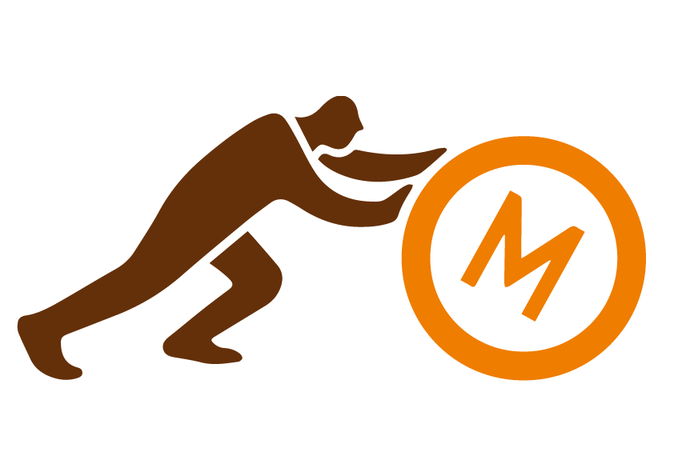

YTM VIRTUAL MUSEUM
LeTourneau LCC-1 Sno-Train
This is a full-size model, so find a large, open area in which to view it! If you're in tight quarters, click 'Desktop Scale.
After starting the experience, look around with your phone to help the program get a feel for your surroundings. You'll see a grid appear on the ground -- once you're happy with its placement, simply tap your screen to make the Sno-Train appear.